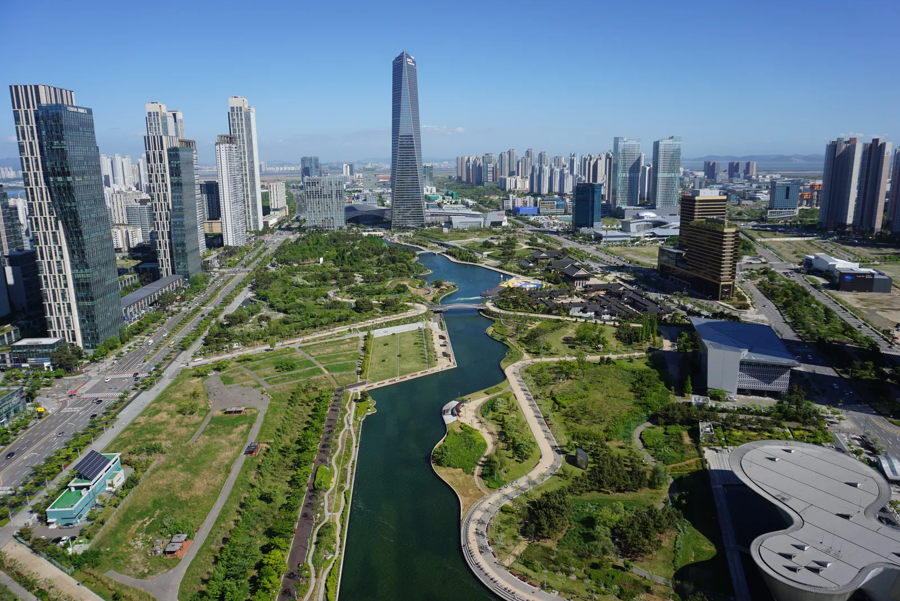
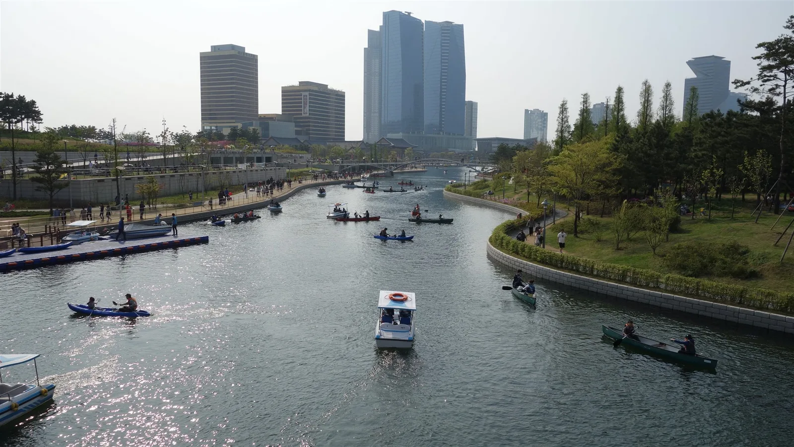
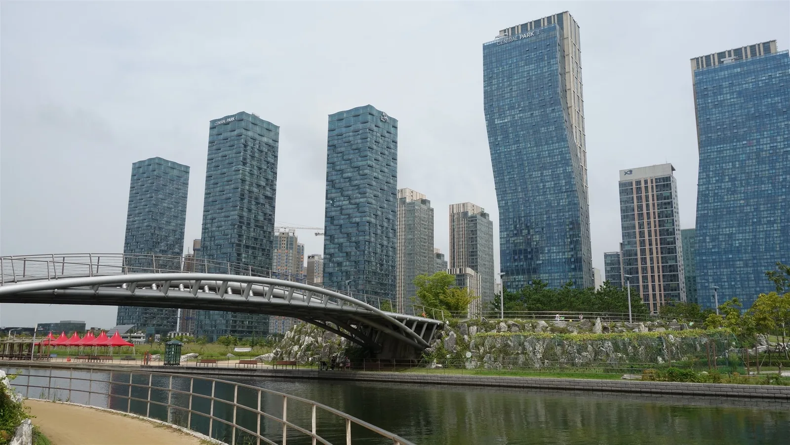
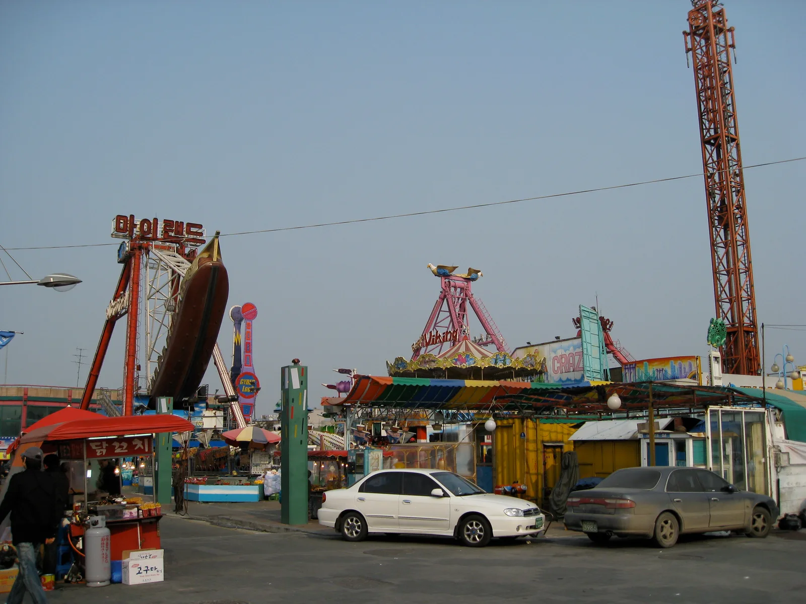
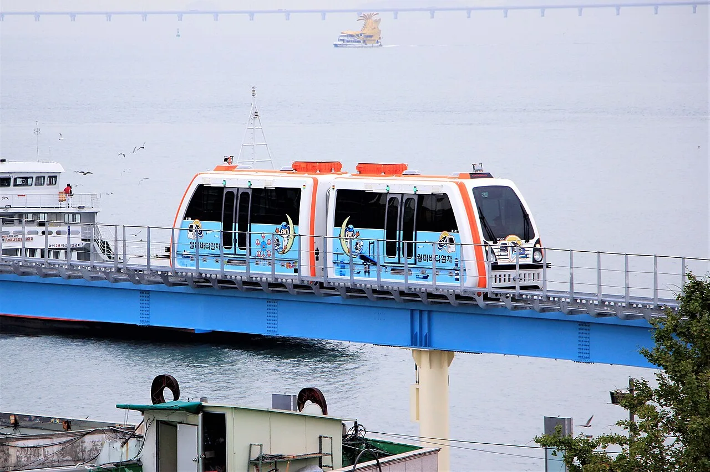
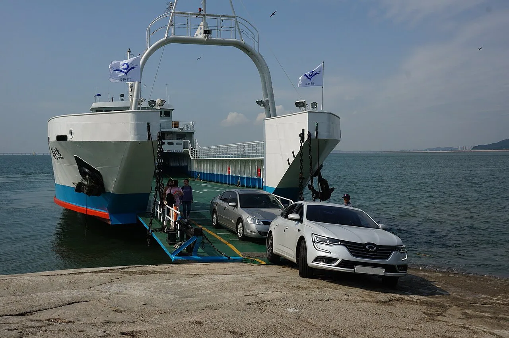
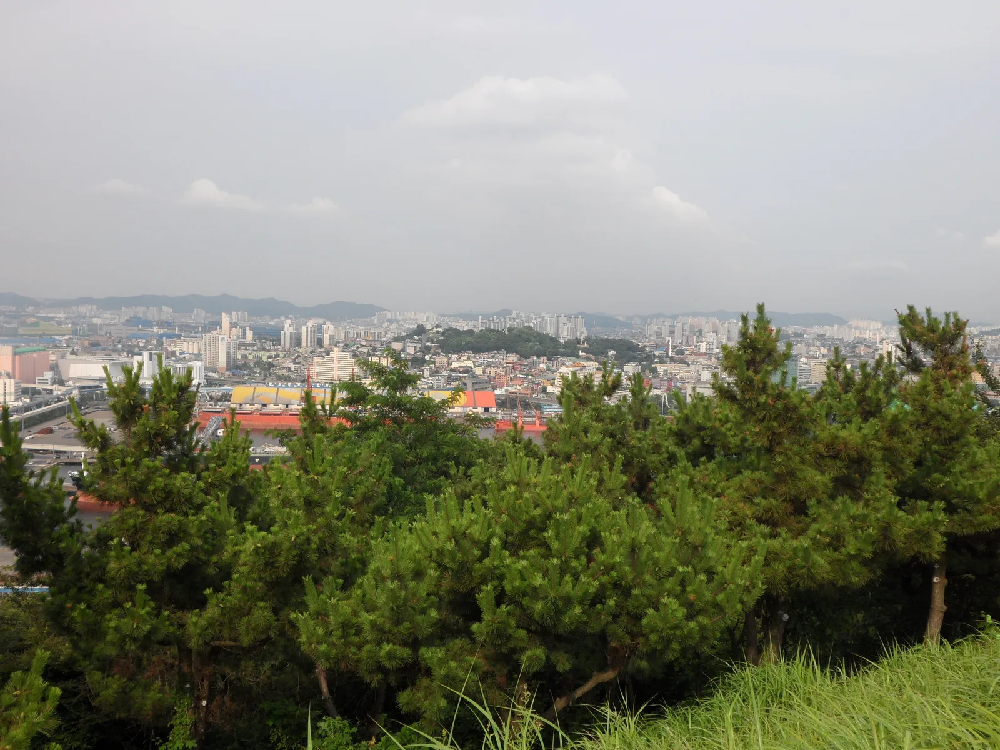

▲ 송도센트럴파크 수로 뒤로 포스코타워송도(305m)를 비롯한 송도국제업무지구 스카이라인이 펼쳐진다
인천 송도국제도시와 월미도는 차로 20~25분 거리에 있으면서도 분위기가 완전히 다른 두 동네다. 송도는 수변공원과 유리 마천루가 늘어선 계획도시고, 월미도는 놀이공원과 회센터, 오래된 항구 정취가 남은 섬 같은 반도다. 서울에서 지하철(수인분당선)로도, 자가용으로도 접근이 쉬워 수도권 근교 당일치기 코스로 묶기 좋다. 이 기사는 송도센트럴파크 수상택시부터 트리플스트리트, 월미테마파크와 월미바다열차, 월미문화의거리 회센터와 인천항 노을, 그리고 가는 법·주차까지 방문 순서대로 정리했다.
1. 송도센트럴파크 — 수상택시로 건너는 도심 수변공원

▲ 송도센트럴파크 수로에는 수상택시 외에도 카누·카약을 즐기는 사람들이 함께 오간다 ⓒ Wikimedia Commons
송도센트럴파크는 바닷물을 끌어들여 만든 국내 최초의 수변형 대형 도심공원으로, 2009년 8월 개장했다. 미국 조경설계사 콘 페더슨 폭스(Kohn Pedersen Fox)가 설계했으며, 공원 한가운데를 가로지르는 수로가 가장 큰 특징이다. 이 수로를 따라 웨스트보트하우스 수상택시가 운항한다. 평일에는 매시 정각 출항하고 공휴일에는 30분 간격으로 배편이 늘어나며, 웨스트보트하우스에서 출발해 UN광장을 왕복하는 약 20분짜리 코스다. 요금은 대인 4,000원, 소인(12개월~초등학생) 2,000원이며 운항 여부는 날씨에 따라 바뀔 수 있어 사전 전화 확인(032-834-4609)이 권장된다. 수상택시 외에 카누·카약 대여도 가능해 물 위에서 스카이라인을 보는 것도 이곳만의 즐길거리다.
송도센트럴파크 최신 이용 정보 확인 가능2. 트리플스트리트·커넥티드타워 — 인천아트센터까지 이어지는 신도시 명소

▲ 센트럴파크 수로를 가로지르는 보행교 뒤로 송도국제업무지구의 주거·오피스 타워들이 늘어서 있다 ⓒ Wikimedia Commons
공원 산책 후에는 걸어서 이동 가능한 트리플스트리트로 넘어가기 좋다. A동부터 D동까지 이어지는 오픈스트리트형 복합쇼핑몰로, A~C동은 카페·음식점 위주, D동은 볼링장·실내놀이터·멀티플렉스 영화관이 몰려 있다. 영업시간은 매일 10시 30분~22시이며 지하주차장은 기본 5시간 무료(메가박스 이용 시 1시간 추가), 이후 10분당 500원이 부과된다. 바로 옆 커넥티드타워(G타워) 전망대에서는 송도국제도시 전경과 바다를 함께 내려다볼 수 있다. 조금 더 걸으면 국내 최대 규모 클래식 공연장인 인천아트센터(아트센터인천)와 트라이보울(복합문화공간)도 있어, 시간 여유가 있다면 함께 둘러볼 만하다.
3. 월미도 이동 — 월미테마파크·놀이공원

▲ 월미도 놀이공원 거리. 마이랜드·월미짱랜드 등 여러 업체가 나란히 자유이용권 놀이기구를 운영한다 ⓒ Wikimedia Commons
송도에서 차로 20~25분이면 월미도에 닿는다. 월미도는 이름 그대로 섬 모양이 반달을 닮았다 해서 붙은 이름으로, 지금은 방파제 도로로 인천 본토와 연결돼 있다. 도착하면 가장 먼저 눈에 띄는 것이 해안선을 따라 늘어선 놀이공원 거리다. 월미테마파크(월미짱랜드)를 비롯해 마이랜드 등 여러 업체가 바이킹·후룸라이드 같은 놀이기구를 운영하며, 종합 자유이용권은 대인 기준 2~3만 원대로 업체·시즌에 따라 다르다. 대부분 입장은 무료이고 기구별로 개별 요금을 내는 방식이라, 타고 싶은 기구만 골라 즐기기에도 부담이 적다.
4. 월미바다열차 — 섬을 한 바퀴 도는 모노레일

▲ 월미바다역~박물관역~문화의거리역~월미공원역 4개 역을 잇는 월미바다열차. 멀리 인천대교가 보인다 ⓒ Wikimedia Commons
월미도의 대표 이동 수단이자 관광 콘텐츠는 월미바다열차다. 인천교통공사가 운영하는 무인 모노레일로, 월미바다역·박물관역·월미문화의거리역·월미공원역 4개 역을 순환하며 섬 전체와 인천항, 인천대교 조망까지 차창으로 볼 수 있다. 2026년 기준 운영시간은 성수기(4~10월) 주중 10:00~18:00·주말 10:00~19:00, 비수기(11~3월)는 10:00~18:00이며 매주 월요일은 휴무(월요일이 공휴일이면 정상 운영)다. 요금(편도, 어른 기준)은 평일 11,000원·주말 14,000원이며, 인천시민은 평일·주말 모두 8,000원으로 할인된다. 청소년·노인, 어린이, 장애인·국가유공자 요금은 별도로 낮게 책정돼 있고, 당일 1회 재승차가 가능해 마음에 드는 구간을 다시 타볼 수도 있다.
| 항목 | 내용 |
|---|---|
| 운영시간(성수기 4~10월) | 주중 10:00~18:00, 주말 10:00~19:00 |
| 운영시간(비수기 11~3월) | 10:00~18:00 |
| 휴무일 | 매주 월요일(공휴일인 경우 정상 운영) |
| 요금(편도, 어른) | 평일 11,000원 / 주말 14,000원 |
| 요금(인천시민, 어른) | 평일·주말 8,000원 |
| 재승차 | 당일 1회 가능 |
| 문의 | 032-450-7600(인천교통공사 신사업개발팀) |
5. 월미문화의거리 회센터·인천항 노을

▲ 월미도 인근 항구에서는 서해 섬을 오가는 카페리를 드물지 않게 볼 수 있다 ⓒ Wikimedia Commons
바다열차에서 내려 월미문화의거리역 방향으로 걸으면 회센터가 밀집한 월미문화의거리가 나온다. 인천 앞바다에서 잡힌 활어를 바로 맛볼 수 있는 횟집이 줄지어 있고, 거리 곳곳에 조형물과 야외 공연장, 분수대가 있어 저녁 산책 코스로도 좋다. 월미도가 방문객들 사이에서 노을 명소로 꼽히는 이유도 이 동선과 맞닿아 있다. 해 질 무렵 5~6시경 서쪽 바다로 해가 넘어가면 인천항과 오가는 배들, 저 멀리 인천대교까지 붉게 물드는데, 회센터에서 저녁을 먹으며 바다 쪽 좌석에 앉으면 노을을 자연스럽게 함께 볼 수 있다.

▲ 월미공원 전망대 부근에서 내려다본 인천항과 시가지. 항구 특유의 산업 시설과 도심이 함께 보인다 ⓒ Wikimedia Commons
6. 가는 법·주차 정보
서울에서 대중교통으로는 수인분당선을 타고 인천역에 내린 뒤 도보나 버스로 월미도에 진입하는 경로가 일반적이며, 송도는 인천1호선 센트럴파크역이 공원과 바로 연결된다. 자가용을 이용한다면 송도센트럴파크→월미도 구간은 제2경인고속도로·인천대로를 거쳐 20~25분 정도 걸린다. 주차는 두 곳 모두 유료 구간과 무료 구간이 섞여 있으니 미리 확인하는 편이 낫다.
| 구역 | 요금·운영 |
|---|---|
| 송도센트럴파크(웨스트보트하우스 인근) | 30분 1,000원 안팎(현장 고지 기준), 24시간 운영 |
| 트리플스트리트 지하주차장 | 기본 5시간 무료(메가박스 이용 시 1시간 추가), 이후 10분당 500원, 10:30~22:00 영업시간 내 이용 |
| 월미도 8부두 주차장 | 무료, 437면 |
| 월미공원역 주차장 | 무료, 56면 |
| 월미놀이동산 앞 유료 주차장 | 30분 1,000원, 1시간 2,500원, 이후 구간 요금 추가 |
✅ 인천 송도·월미도 당일치기, 가기 전 체크리스트
· 송도센트럴파크 수상택시(웨스트보트하우스)는 대인 4,000원, 약 20분 UN광장 왕복 코스
· 트리플스트리트 지하주차장 기본 5시간 무료(이후 유료), 영업시간 10:30~22:00, D동에 영화관·볼링장
· 커넥티드타워(G타워) 전망대·인천아트센터도 도보 연계 가능
· 월미테마파크 등 놀이공원 거리는 대부분 입장 무료, 기구별 개별 요금
· 월미바다열차는 매주 월요일 휴무, 2026년 편도 요금 평일 11,000원·주말 14,000원(인천시민 8,000원)
· 월미문화의거리 회센터에서 저녁 겸 노을 감상하기 좋음(해 질 무렵 5~6시경)
· 송도~월미도 자가용 이동 20~25분, 월미도 8부두·월미공원역 주차장은 무료